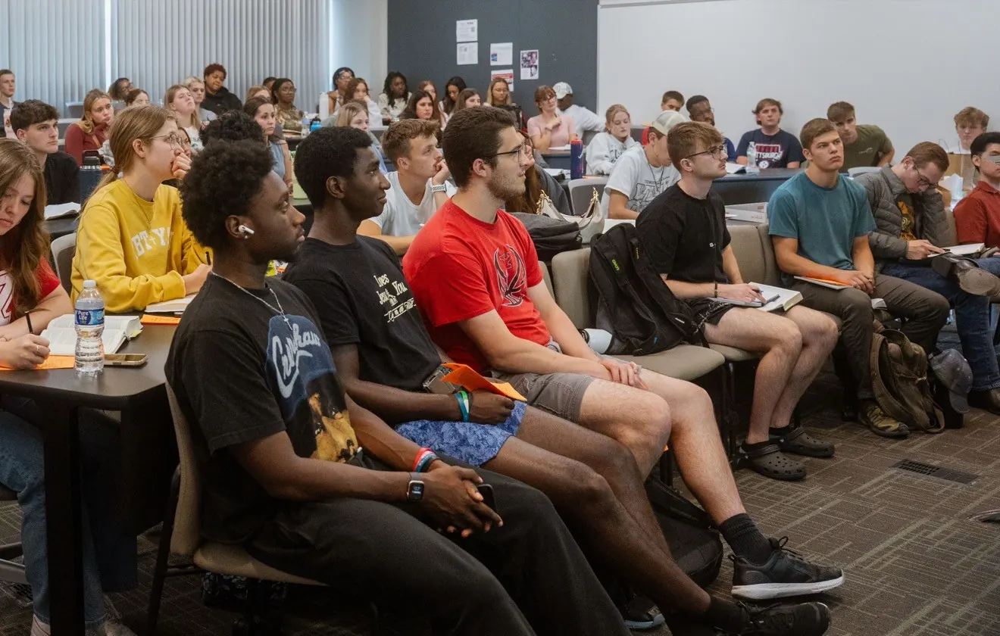
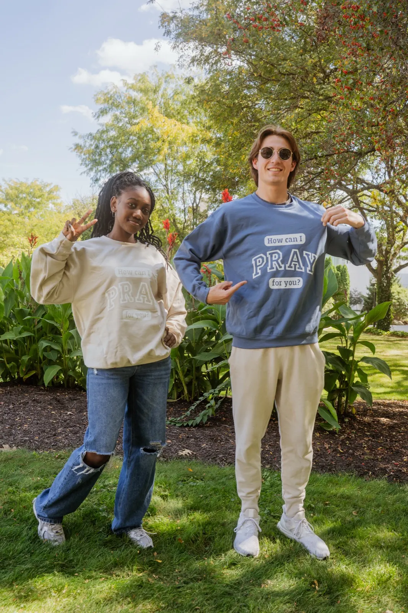
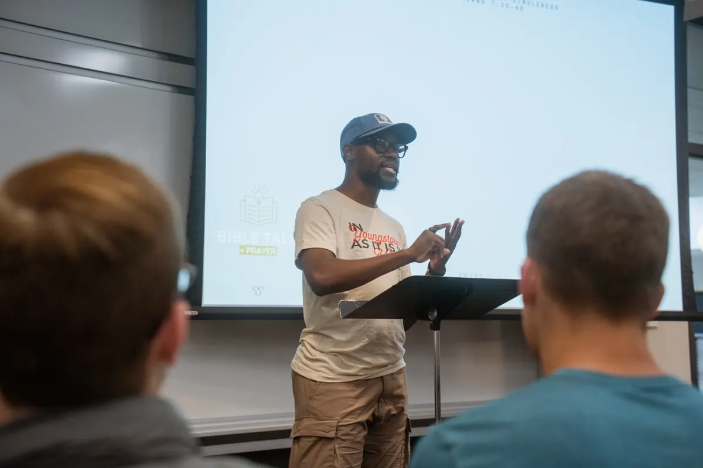
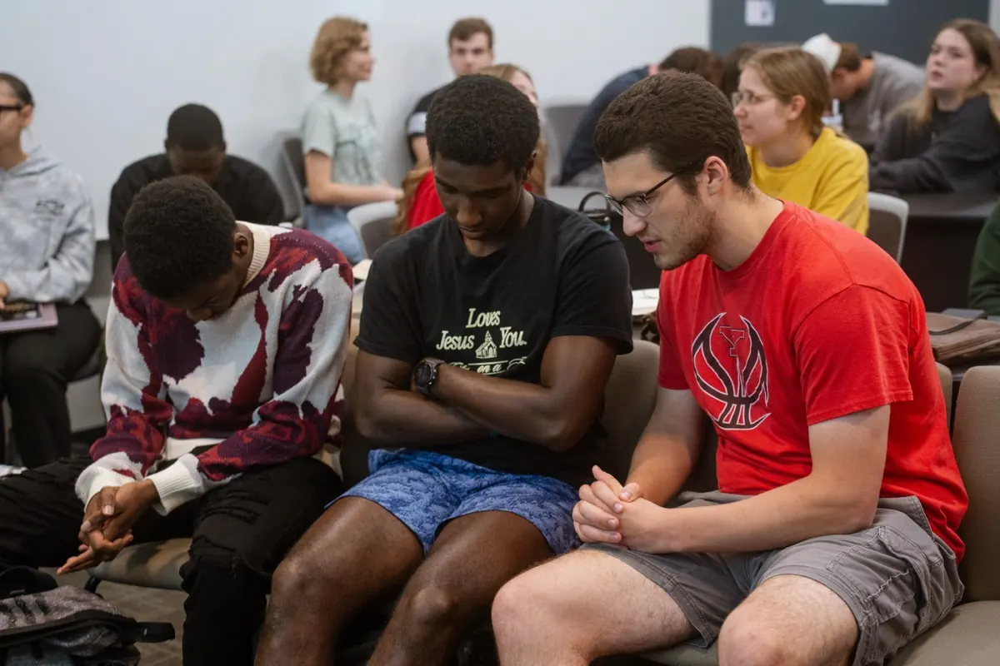

Maturing students in Christ at Youngstown State University and beyond.
We meet every Monday at 3:55pm in the Williamson Building to open the Bible together. Come as you are — no background required.

Three ways in
Whether you want to dig deep into Scripture with a few friends or learn how to talk about your faith on campus, there's a place to start.
All the ways to get involvedUp to four people reading a book of the Bible together, whenever it suits you. Home groups are larger and meet in a leader's home.
Mondays at 3:55pm we work through a book of the Bible or a topic, then pray for the people around us.
Join us for the service at Old North Church at 9:15am, then TBT Sunday School right after at 10:55am.



What our students say
▶ Watch: Student Testimonies (0:49)Moving to college can be scary. It is easy to feel alone and overwhelmed by change. TBT has given me a second family and a support group to help get me through this difficult transition.
More from Jessica
What keeps me coming backThe people holding me accountable and the people I see growing.
What I hope people experienceLife transformation.
A moment I'll never forgetWhen Bruce recognized me and shouted my name across campus after only meeting me once.
When going to college, many things change for better or worse: routines, friends, and locations all change in one way or another. TBT has allowed me to make these changes for the better; I've been able to make many new friends with the same goal -- pursuing Jesus.
TBT has helped me to grow and consider others beyond myself. Through the regular community and teaching of God's Word I am reminded of the love that Christ has for me through His people. During a time when determining what's true is oddly confusing, college students have the opportunity to be reminded of the never changing hope and truth that Jesus brings.
Everything. I love the teaching, preaching, and training. I love my friends. I love all the little moments. There is honestly nothing I do not like about TBT.
More from Maddie
What I hope people experienceI hope people experience genuine friendship and a better understanding of the gospel and its urgency.
A moment I'll never forgetI'll never forget praising God as a group during WHTQT, what a special moment.
The idea that Christ speaks through open Bibles, and how we not only read Scripture but are taught how to read Scripture properly. Beyond that, the Christian community at TBT has become a big part of my life and my walk with Christ — they have become family.
More from Shalom
What I hope people experienceA deeper understanding of what the Gospel is and the call upon our lives as believers as we go through God's Word. Not only that, but I also hope people get to experience what it feels like to be part of a young adult community with Christ as the foundation.
A moment I'll never forgetI think every moment at TBT is memorable and unique in its own way, so I would say the one thing I'll never forget is the feeling of being there and the excitement I get when I'm on my way to TBT.
The desire to grow more in the Lord and to serve.
More from Asher
What I hope people experienceLearn the truth of the Gospel and are able to understand and share with people in their lives (to become disciple making disciples).
A moment I'll never forgetCross con 25.
The faithful preaching of the Word, the Christ centered community, and the investment in youth.
More from Josiah
What I hope people experienceI hope people experience a community that will nourish them into a more faithful follower of Christ.
A moment I'll never forgetDapping Jake up at Ignite.
Missed a Monday?
Listen to past talks